php - это сервеный язык и с ним не все так просто как с html, css и js. Раз это серверный язык, то для него нужен хостинг ( это что-то частички от сервера, пока не задумываетесь). Ну раз выяснили что нужно( подсказка: хостинг), остается только один вопрос: где взять хостинг? Купить конечно же. Но этот вариант не подходит новичкам так как они только еще учаться по этому приходит на помощь локальный сервер. Я знаю всего 3 локальных сервера это: MAMP, OpenServer, XAMMP. каждый из них подходит под определенную операциионную системую.
Не много заумного.
Некоторые распространенные порты:
Так как это defalt значения не обязательно их прописывать в поисковой строчке браузера.
Расскажу немножко про каждого:
Cсылка на их сайт, там найдете свою операциионную систему и скачаете MAMP
Во время установки можете не выбирать mamp pro.
Когда установите то будет вам доступно вот такое окошко.
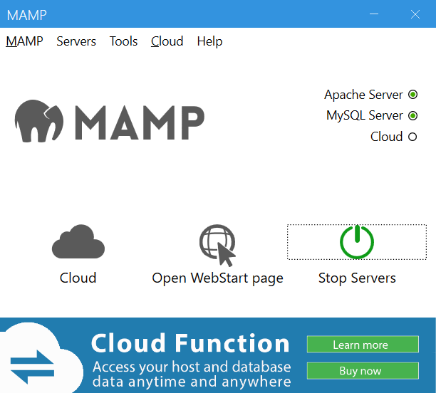Переключите на старт. Все сервер запущен (вы увидите как включились две зеленые точки).
Теперь создадим файл index.php . Для этого откроем проводник. Найдем папку с MAMP, далее htdocs и здесть мы можем создать наш index.php
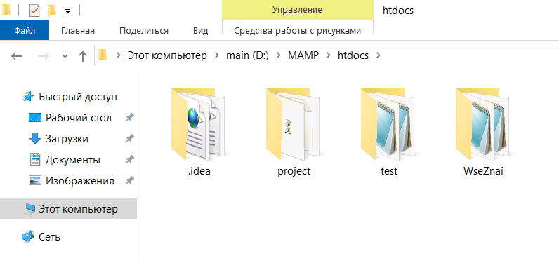Или создадим папку (например test) и в здесь создайте файл index.php
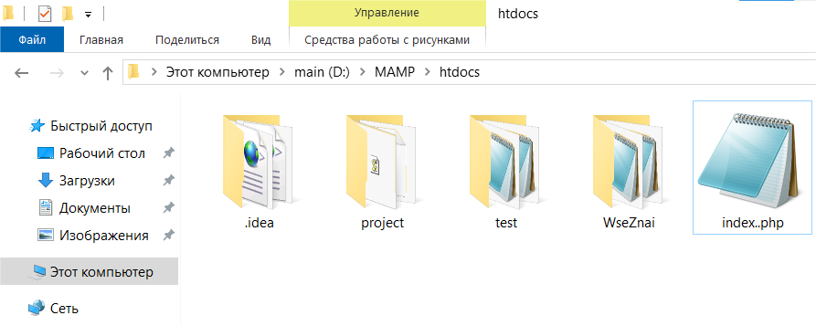Правой кнопкой мыши по файлу index.php и выберите открыть c помощью -> блокнот.
код для index.php:
<!DOCTYPE html>
<html lang="en">
<head>
<meta charset="UTF-8">
<meta name="viewport" content="width=device-width, initial-scale=1.0">
<title>#3</title>
</head>
<body>
<h1>Работа с php на MAMP</h1>
</body>
</html>
Всавьте код и нажмите ctrl s.
Теперь перейдите в браузер и в поисковой строке напишите http://localhost/ , далее прописываем путь к index.php (можно его и не прописывать так как браузер автоматически находит файлы с именем index).
В итоге: http://localhost/index.php или http://localhost/ . Эти ссылки отобразят наш php.
Если вы создали папку и в нее занесли свой проект то вам подойдет: http://localhost/test/index.php
Скачиваем с официального сайта (ссылка на сайт).
Устанавливаем.
Далее открываем наше приложение. Включаем apache и MySQL.
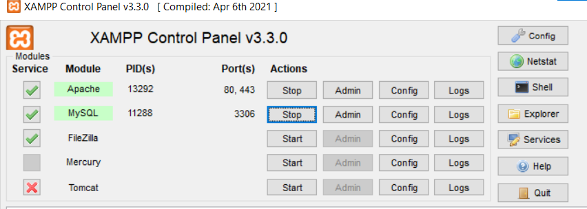Переходим в браузер и пишем http://localhost/
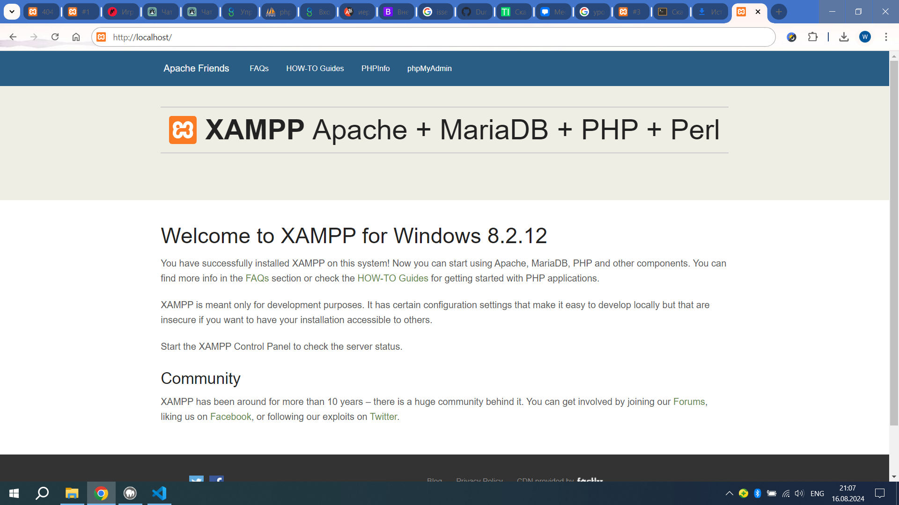Здесь нажмите phpMyAdmin, чтоб он открылся в другой вкладке (он дальше пригодится) или чтоб открыть phpMyAdmin зайдите в xammp и напротив где mySQL нажмите admin.
Далее откроейте проводник зайдите в папку с XAMMP -> htdocs.
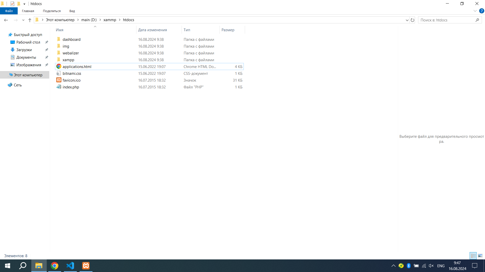Cоздадим папку ( например: MyProject) и в ней index.php
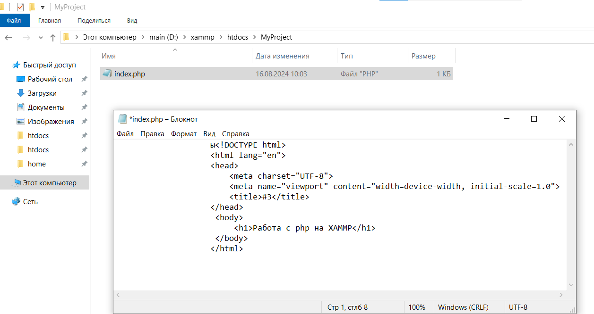Заносим код
код для index.php:
<!DOCTYPE html>
<html lang="en">
<head>
<meta charset="UTF-8">
<meta name="viewport" content="width=device-width, initial-scale=1.0">
<title>#3</title>
</head>
<body>
<h1>Работа с php на XAMMP</h1>
</body>
</html>
Перезагружаем страницу браузера.
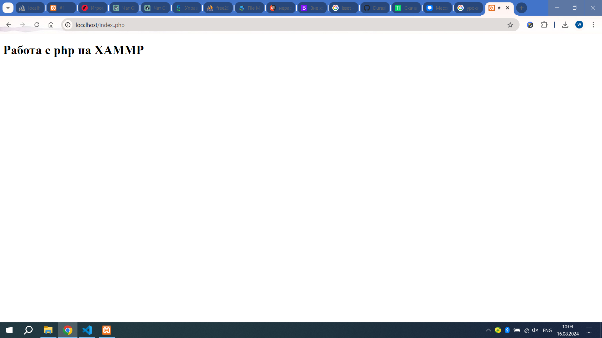Скачиваем с официального сайта. Если выбрать бесплатную установку, то процесс скачивания будет долгим.
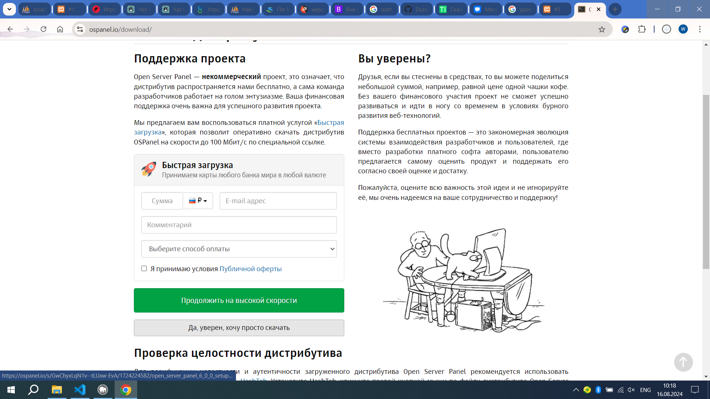Устанавливаем (во время установки вам будет предложены 3 варианта: полная установка, компактная установка, выборочная, если вы совсем ничего не понимаете то выберите компактную установку, а если вы уже знакомы с php то берите полную).
Как только установка завершена и вы перезапустили ПК, находим ярлык и открываем open server , снизу справо будет его иконка
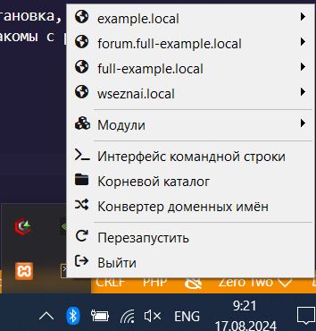В модулях выбираем php версию допустим 8.1 и включаем ее и в модулюх найдите MySQL и включите последнюю версию. Как только все сделали перезапустите open server. Потом переходим в example.local и выбираем открыть в браузере.
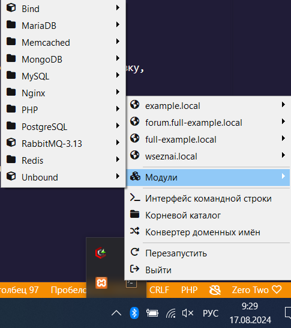Если что-то пошло не так и в браузере пишется нет подключения то:перезагрузите open server это делается в его ментю, cмените с https://example.local/ на http://example.local/ , если это подействовало то проблема в сертификате нажмите пкм по ярлыку open server свойства -> расположение файла, найдите сертификат и кликните по нему чтоб установить. И тогда можете использовать https://example.local/
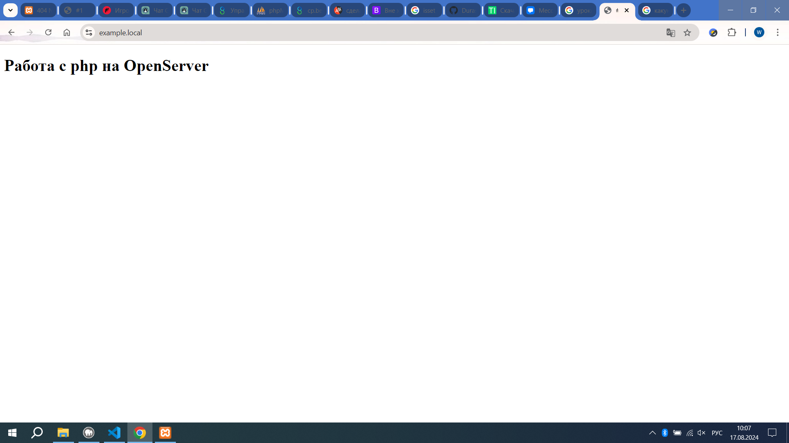Зайдите в конревой каталог.
Вместо htdocs здесь нажимаем home, здесь все проекты.
Создаем папку с окончанием .local.
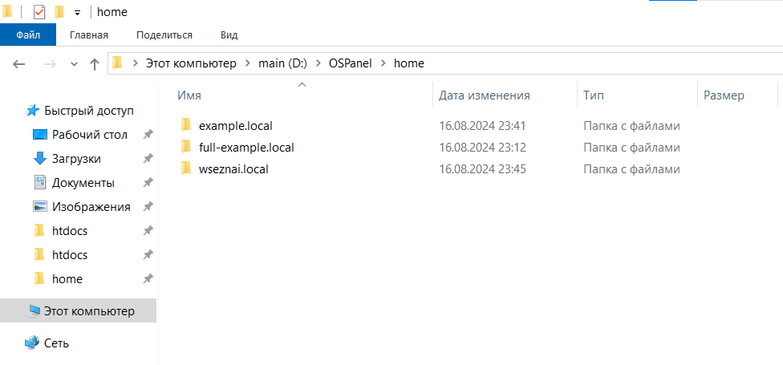В этой папке создаем папке .osp и в этой папке создаем файл project.ini c именем нашей папки.
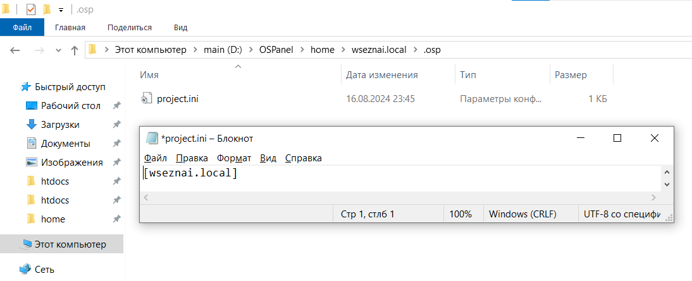Перезагружаем open server и видим что появился наш проект.
Заходим в нашу папку через меню и создаем файл index.php
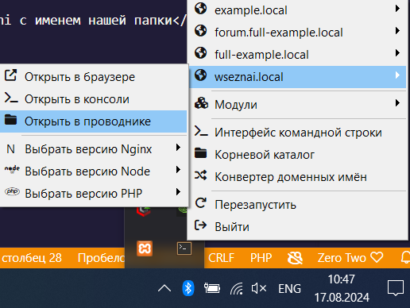код для index.php:
<!DOCTYPE html>
<html lang="en">
<head>
<meta charset="UTF-8">
<meta name="viewport" content="width=device-width, initial-scale=1.0">
<title>#3</title>
</head>
<body>
<h1>Работа с php на OpenServer </h1>
</body>
</html>
Сохраняем и переходим через меню в браузер.